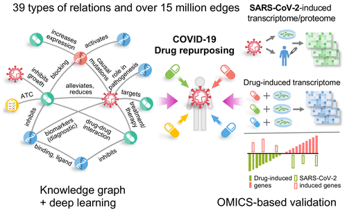

<!DOCTYPE HTML>
<!--
	Stellar by HTML5 UP
	html5up.net | @ajlkn
	Free for personal and commercial use under the CCA 3.0 license (html5up.net/license)
-->
<html>
	<head>
		<title>Interaction prediction</title>
		<meta charset="utf-8" />
		<meta name="viewport" content="width=device-width, initial-scale=1, user-scalable=no" />
		<link rel="stylesheet" href="../assets/css/main.css" />
		<noscript><link rel="stylesheet" href="../assets/css/noscript.css" /></noscript>
		<link type="text/css" rel="stylesheet" href="../assets/css/elements.css" />
		<link rel="stylesheet" href="../iceui/src/iceCode.css" />
        <script src="../iceui/src/iceCode.js"></script>
       
	</head>
	<body class="is-preload">

		<!-- Wrapper -->
			<div id="wrapper">

				<!-- Header -->
					<header id="header">
						<h1>药物重定位</h1>
						<!-- <p>描述</p> -->
					</header>

				<!-- Main -->
					<div id="main">

						<!-- Content -->
							<section id="content" class="main">

								<!-- Text -->
									<section>
										
										<p><b>药物重定位（drug repurposing）是一种用于发现老药或在研药物超出原始批准的适应证，扩大其适用范围和用途的策略，具有研发成本低、开发时间短等优点。</b>
										<br/><br/>
									    <b>论文“Repurpose Open Data to Discover Therapeutics for COVID-19 Using Deep Learning”旨在利用深度图学习方法，从大规模的医学知识图谱中来进行新冠病毒老药新用药物的预测。</b></p>
									    <div class="col-12" align="center"><span class="image fit"></span></div>

									    <h2><b>数据预处理</b></h2>
										<p><b>我们使用GNBR数据集,drugbank数据集以及实验发现的COVID-19基因相关的数据构建成一个知识图谱。</b></p>
										<h4><b>获取GNBR数据集</b></h4>
										<pre class = "iceCode:python"># 下载地址如下,并下载下述八个文件，文件需要处理为如下格式：Compound::DB00331    GNBR::E::Compound:Gene    
# Gene::3630
https://zenodo.org/record/3459420#.YZIDMxpByUl
·part-i-chemical-disease-path-theme-distributions.txt.gz
·part-i-chemical-gene-path-theme-distributions.txt.gz
·part-i-gene-disease-path-theme-distributions.txt.gz
·part-i-gene-gene-path-theme-distributions.txt.gz
·part-ii-dependency-paths-chemical-disease-sorted-with-themes.txt.gz
·part-ii-dependency-paths-chemical-gene-sorted-with-themes.txt.gz
·part-ii-dependency-paths-gene-disease-sorted-with-themes.txt.gz
·part-ii-dependency-paths-gene-gene-sorted-with-themes.txt.gz</pre>
<h4><b>获取DrugBank中已批准药物,以及对应的药物-药物相互作用，药物副作用等关系</b></h4>
										<pre class = "iceCode:python"># 文件需要处理成如下格式：<http://bio2rdf.org/drugbank:DB15575>	x-atc	<http://bio2rdf.org/atc:L01XD07>
https://go.drugbank.com/releases/5-1-8/downloads/approved-structure-links</pre>
<h4><b>处理数据为指定格式的知识图谱</b></h4>
<p><b>药物重定位的知识图谱来源于drugbank和GNBR两个数据集。</b></p>
										<pre class="iceCode:python">
# 注：我们已经提供了默认使用的文件，您也可以按照如下代码自行处理
python GNBR_process.py
python drugbank.py</pre><br/>

<h2><b>模型定义</b></h2>
<p><b>模型主要采用RotatE模型。</b></p>
<pre class="iceCode:python">
def RotatE(self, edges):
    re_head, im_head = th.chunk(edges.src['emb'], 2, dim=-1)
    re_tail, im_tail = th.chunk(edges.dst['emb'], 2, dim=-1)

    phase_rel = edges.data['emb'] / (self.emb_init / np.pi)
    re_rel, im_rel = th.cos(phase_rel), th.sin(phase_rel)
    re_score = re_head * re_rel - im_head * im_rel
    im_score = re_head * im_rel + im_head * re_rel
    re_score = re_score - re_tail
    im_score = im_score - im_tail
    score = th.stack([re_score, im_score], dim=0)
    score = score.norm(dim=0)
    return {'score': self.gamma - score.sum(-1)}</pre>

<h2><b>模型训练和评估</b></h2>
<h4><b>模型训练阶段核心代码</b></h4>
<pre class="iceCode:python">
#加载模型
model = load_model(logger, args, dataset.n_entities, dataset.n_relations)
#训练
rel_parts = train_data.rel_parts if args.strict_rel_part or args.soft_rel_part else None
cross_rels = train_data.cross_rels if args.soft_rel_part else None
if args.num_proc > 1:
	procs = []
	barrier = mp.Barrier(args.num_proc)
	for i in range(args.num_proc):
		valid_sampler = [valid_sampler_heads[i], valid_sampler_tails[i]] if args.valid else None
		proc = mp.Process(target=train_mp, args=(args,
													model,
													train_samplers[i],
													valid_sampler,
													i,
													rel_parts,
													cross_rels,
													barrier))
		procs.append(proc)
		proc.start()
	for proc in procs:
		proc.join() </pre>
<h4><b>模型评估阶段核心代码</b></h4>
<pre class="iceCode:python">
def forward_test(self, pos_g, neg_g, logs, gpu_id=-1):
pos_g.ndata['emb'] = self.entity_emb(pos_g.ndata['id'], gpu_id, False)
pos_g.edata['emb'] = self.relation_emb(pos_g.edata['id'], gpu_id, False)

self.score_func.prepare(pos_g, gpu_id, False)

batch_size = pos_g.number_of_edges()
pos_scores = self.predict_score(pos_g)
pos_scores = reshape(logsigmoid(pos_scores), batch_size, -1)

neg_scores = self.predict_neg_score(pos_g, neg_g, to_device=cuda,
									gpu_id=gpu_id, trace=False,
									neg_deg_sample=self.args.neg_deg_sample_eval)
neg_scores = reshape(logsigmoid(neg_scores), batch_size, -1)
if self.args.eval_filter:
	filter_bias = reshape(neg_g.edata['bias'], batch_size, -1)
	if gpu_id >= 0:
		filter_bias = cuda(filter_bias, gpu_id)
	neg_scores += filter_bias

rankings = F.sum(neg_scores >= pos_scores, dim=1) + 1
rankings = F.asnumpy(rankings)
for i in range(batch_size):
	ranking = rankings[i]
	logs.append({
		'MRR': 1.0 / ranking,
		'MR': float(ranking),
		'HITS@1': 1.0 if ranking <= 1 else 0.0,
		'HITS@3': 1.0 if ranking <= 3 else 0.0,
		'HITS@10': 1.0 if ranking <= 10 else 0.0
	})</pre><br/>
<p><b>模型训练之后，我们在测试集上进行结果评估，你可以获得如下类似结果。</b></p>
<pre class="iceCode:python">
Test average MRR: 0.46551840955868057
Test average MR: 96.80531290276386
Test average HITS@1: 0.3822139481598167
Test average HITS@3: 0.5151081197193184
Test average HITS@10: 0.6081913217814693</pre><br/>
<h4><b>完整模型训练</b></h4>
<pre class="iceCode:python">
# 生成 “KG_RotatE_entity.npy”,"KG_RotatE_relation.npy文件
python3 train.py --model RotatE --dataset KG --format raw_udd_hrt --data_path "./data/KG" --data_files train.tsv valid.tsv test.tsv --batch_size 1024 --neg_sample_size 256 --regularization_coef=2e-7 --hidden_dim 200 --gamma 12.0 --lr 0.1 --batch_size_eval 16 --valid --test -adv --gpu 0 --async_update --soft_rel_part --force_sync_interval 1000 --max_step 16000 --neg_sample_size_valid 1000 --neg_sample_size_test 1000 --no_eval_filter --batch_size_eval 1000 --save_emb "./embedding" --save_path "./ckpts"</pre><br/>
<h2><b>新冠病毒的药物重定位预测</b></h2>
<h4><b>存在治疗关系的置信度分数</b></h4>
<p><b>计算新冠实体和 weight>230的药物在Rotate模型下的分数。</b></p>
<pre class="iceCode:python">
import torch.nn.functional as fn
gamma=12.0

scores_per_disease = []
dids = []
#针对治疗关系计算药物和疾病之间的置信度分数
for rid in range(len(treatment_embs)):
	treatment_emb=treatment_embs[rid]
	for disease_id in disease_ids:
		disease_emb = entity_emb[disease_id]
		score = fn.logsigmoid(RotatE(drug_emb, treatment_emb, disease_emb))
		scores_per_disease.append(score)
		dids.append(drug_ids)
scores = th.cat(scores_per_disease)
dids = th.cat(dids)</pre><br/>
<h4><b>对分数进行排序</b></h4>
<pre class="iceCode:python">
idx = th.flip(th.argsort(scores), dims=[0])
scores = scores[idx].numpy()
dids = dids[idx].numpy()</pre>

<h4><b>获取最终 topk 的药物推荐</b></h4>
<pre class="iceCode:python">
_, unique_indices = np.unique(dids, return_index=True)
topk=100
topk_indices = np.sort(unique_indices)[:topk]
proposed_dids = dids[topk_indices]
proposed_scores = scores[topk_indices]

你可以获得如下类似结果:
Compound::DB00811	-0.21416784822940826</pre>
<h2><b>引用</b></h2>
<p><b>如果您对我们的工作感兴趣或者使用了我们的代码，欢迎引用我们的工作：</b></p>
<pre class = "pre">@article{zeng2020repurpose,
title={Repurpose open data to discover therapeutics for COVID-19 using deep learning},
author={Zeng, Xiangxiang and Song, Xiang and Ma, Tengfei and Pan, Xiaoqin and Zhou, Yadi and Hou, Yuan and Zhang, Zheng and Li, Kenli and Karypis, George and Cheng, Feixiong},
journal={Journal of proteome research},
volume={19},
number={11},
pages={4624--4636},
year={2020},
publisher={ACS Publications}
}
</pre>
									    </div>
								        </div>
									</section>

									
					</div>

				<!-- Footer -->
					<footer id="footer">
						<!-- <p class="copyright">&copy; Untitled. Design: <a href="https://html5up.net" target="_blank">HTML5 UP</a>.</p>
						<section id="footer"> -->
							<p class="copyright">
								<a href="http://csee.hnu.edu.cn/" target="_blank">College of Computer and Electronic Engineering | Hunan University</a>
							</p>
							<p class="copyright">Computer and Electronic Engineering Building, Hunan University, Changsha, China, 410082<br />Copyright © Bioinfirmatics And Health AI Group @ Hunan University. Adapted from HTML5 UP</p>
					
					</footer>

			</div>

		<!-- Scripts -->
			<script src="../assets/js/jquery.min.js"></script>
			<script src="../assets/js/jquery.scrollex.min.js"></script>
			<script src="../assets/js/jquery.scrolly.min.js"></script>
			<script src="../assets/js/browser.min.js"></script>
			<script src="../assets/js/breakpoints.min.js"></script>
			<script src="../assets/js/util.js"></script>
			<script src="../assets/js/main.js"></script>
			<script>ice.code.light();</script>

	</body>
</html>